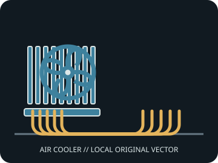

[ INDIVIDUAL COMPONENT // AIR CPU COOLING ]
DeepCool AK620 Digital
Dual-tower cooler with a top-mounted status display, six heat pipes, and two PWM fans.

IDENTIFICATION: Match the model/SKU, revision, and supplied bracket. Dimensions and socket coverage can vary by package or region; verify the included hardware and current manufacturer documentation before installation.
Dimensions, fit, and manufacturer specifications
| Exact model / SKU | AK620 Digital |
|---|---|
| Overall dimensions | 129 × 138 × 162 mm (L × W × H), including the digital top display. |
| Installed height / case clearance | 162 mm; include this height when checking the case side panel. |
| Supplied fan(s) | 2 × 120 × 120 × 25 mm PWM fans, 500–1,850 rpm ±10%; display/control requires an available internal USB 2.0 header. |
| Noise / airflow (manufacturer figures) | Maximum fan noise ≤28 dB(A); maximum airflow 68.99 CFM per fan as specified by DeepCool. |
| Heat pipes | Six 6 mm copper heat pipes. |
| Socket bracket compatibility | Intel LGA 1851 / 1700 / 1200 / 1151 / 1150 / 1155 / 2011 / 2011-v3 / 2066; AMD AM5 / AM4. |
| RAM / motherboard clearance | Published DIMM clearance is 43 mm with both fans installed and up to 59 mm in a single-fan arrangement; check fan position and motherboard layout. |
Cooler height is not a complete fit check: account for fan lift, side-panel clearance, motherboard heatsinks, DIMM position, and any case tolerance.
Installation and service notes
- Install only with the model-specific manual and retention hardware for the selected CPU socket. Confirm orientation and bracket standoff before tightening.
- Apply thermal interface material as directed by the cooler maker. Tighten evenly, connect PWM leads to suitable headers, and verify fan tachometer operation.
- Disconnect power and restrain fan blades during cleaning. Check for fin damage, cable contact, or loosened fasteners during service.
Manufacturer sources
- DeepCool — AK620 Digital product specificationsManufacturer dimensions, fan data, socket list, and digital display details.
- DeepCool — AK620 Digital manual (PDF)Manufacturer installation, wiring, and mounting documentation.
Static reference only. Manufacturers can change regional SKUs, bracket bundles, product specifications, and support documents; check the documentation for the exact unit.